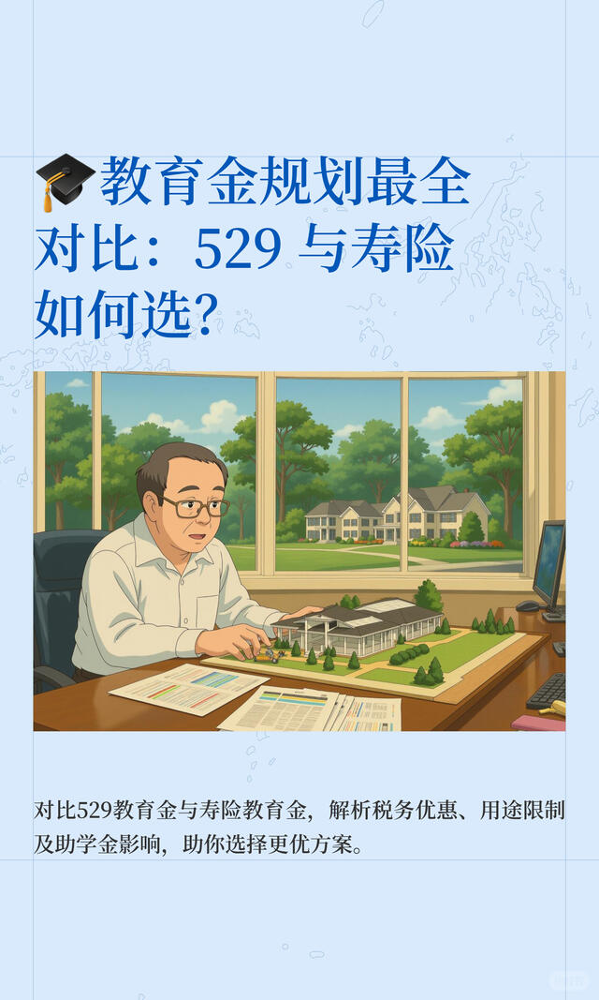

未动姐姐
首页
笔记
关于
未动姐姐
小红书号：994991316
IP属地：美国
纽约
70后资深少女，数据分析+互联网退役老兵，理财研究爱好者
10+
关注
10+
粉丝
1000+
获赞与收藏
小红书
热门笔记
兼职保险经纪，普通人也能开启"财富外挂"
7 赞
别再IUL，WL傻傻分不清！美国寿险小白必看！
63 赞
401K"洗白"为免税？Roth Conversion神器
72 赞
美国爸妈必看：529 教育基金到底值不值得开
142 赞
寿险会不会影响白卡？小心踩坑
48 赞

教育金规划最全对比：529 与寿险
2 赞
×
查看原文 →
返回